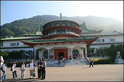
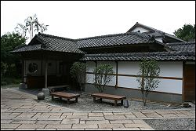
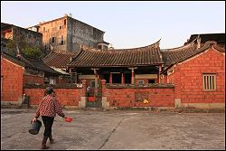

| |
古蹟穿越時空歲月，躲過地震、經濟開發、個人的私利劫後餘生的建物，紀錄台灣的歷史發展與開發的過程，也讓我們透過古蹟的見證得知當年社會脈動與生活文化變遷相關知識，造就台灣文化的特性與台灣獨特人文與
歷史發展。
古蹟的存在具有整個歷史的連貫，文化的認同，社會價值的判斷，它如歷史的事件一般讓我們由認識古蹟中體驗當時所發生的真實場景與歷史意義，古蹟更是一個國家的生命的延續發展，台灣古蹟其歷史地位與價值都是唯一的，其他國家的古蹟歷史無法取代，古蹟也是研究歷史的珍貴要素，透過研究去解開文化發展的特性及所
蘊含的文明發展。
探究古蹟之美可以依循人、事、時、地、物五個要素進行古蹟的研究與探究方向，先以人文背景思索其發生的歷史人物為基本的認知，接著從事件發生的始末去了解，由時間的要素探索當時時空的背景，古蹟的地點位置與相關性，最後進入古蹟的核心建物，就建物的具像、外觀、結構、格局、文物、彩繪、雕飾等深入研究與觀察，便能掌握古蹟的歷史意義與文化價值。
參考資料：
1.黃柏勳 發現台灣古蹟 2007 展讀 頁6 |
|
 |
| 陽明山中山樓 |
|
 |
| 北投文物館 |
|
 |
| 新埔張氏古厝 |
|